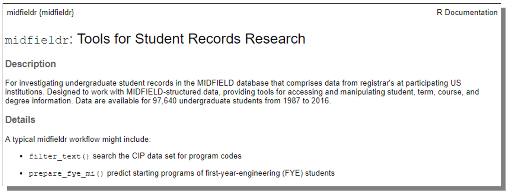
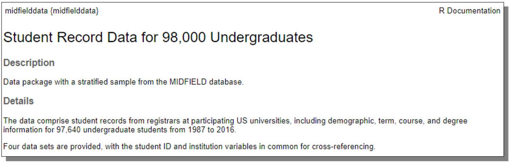

midfieldr
Undergoing major revision
Based on feedback from workshop attendees and use-testing, the package is undergoing significant, non-backwards-compatible revision to th API.
While in this ambiguous state, the package should be used experimentally only. We hope to have a stable release by the end of July 2021.
Tools for student records research
The Multiple-Institution Database for Investigating Engineering Longitudinal Development (MIDFIELD) is a partnership of US higher education institutions with engineering programs. MIDFIELD contains registrar’s data for 1.7M undergraduates in all majors at 19 institutions from 1987–2019 (Ohland and Long, 2016).
Our software environment comprises two R packages:
midfieldr An R package providing functions specialized for manipulating MIDFIELD data to examine the intersectionality of race/ethnicity, sex, and discipline in persistence metrics such as stickiness (retention by a discipline) and graduation rate.
midfielddata An R package with practice data for users to learn about student record analysis using R. However, these data are not suitable for drawing inferences about student performance, i.e., not for research.
Data
Taxonomy of programs
midfieldr includes cip, a data frame of the 2010 Classification of Instructional Programs (CIP)—a taxonomy of academic programs curated by the US Department of Education, National Center for Education Statistics (NCES), Integrated Postsecondary Education Data System (IPEDS).
-
cip(Link to data dictionary) Data frame with 1584 observations and 6 variables providing program codes and names at the 2, 4, and 6-digit levels. Each observation is a unique program keyed by a 6-digit CIP code. Occupies 380 kB of memory.
Student records for practice
midfielddata provides a proportionate stratified random sample of the MIDFIELD research data. The sampling strata are institution, cip4 (the first four digits of the 6-digit CIP code), transfer status, race/ethnicity, and sex. Contains data for 97,640 undergraduates at 12 institutions from 1987–2016 in four data sets:
student(Link to data dictionary) Data frame with 97,640 observations and 13 demographic variables. Each observation is a unique student keyed by student ID. Occupies 19 MB of memory.course(Link to data dictionary) Data frame with 3.5 M observations and 12 academic course variables keyed by student ID, term, and course. Each observation is one course in one term for one student. Occupies 349 MB of memory.term(Link to data dictionary) Data frame with 727,369 observations and 13 academic term variables keyed by student ID and term. Each observation is one term for one student. Occupies 82 MB of memory.degree(Link to data dictionary) A data frame with 97,640 observations and 5 graduation variables keyed by student ID. Each observation is a unique student. Occupies 10.2 MB of memory.
In making the midfielddata package public, maintaining confidentiality required that some variables be omitted and that student and institution identifiers be anonymized.
Student records for research
Complete MIDFIELD data suitable for student-records research are available to researchers under the following conditions:
Your institutional IRB has granted approval for your project to study students using MIDFIELD. At most institutions, the use of MIDFIELD data for research is in the IRB “Exempt” category, but institutional practices vary.
Each researcher using the data signs a letter of confidentiality describing the guidelines for how the data may be reported.
The research data and practice data have the same structure (student, course, term, and degree) with the same variable names, though some research variables are omitted from the practice data, as noted above. Thus R scripts written for the practice data should generally work with the research data.
For more information about obtaining access to MIDFIELD research data, contact Russell Long (ralong@purdue.edu)
Install midfieldr
We use the install_github() function from the remotes package to install midfieldr from GitHub. In the Console, run:
# install remotes
install.packages("remotes")
# install midfieldr
remotes::install_github("MIDFIELDR/midfieldr")You can confirm a successful installation by viewing the package help page. In the Console, run:
library("midfieldr")
? midfieldrIf the installation is successful, the code chunk above should produce a view of the help page as shown here.

Install the practice data
Because of its size, the data package is stored in a “drat” repository. Installation takes time; please be patient and wait for the Console prompt “>” to reappear. In the Console, run:
# install midfielddata
install.packages("midfielddata",
repos = "https://MIDFIELDR.github.io/drat/",
type = "source")
# be patientOnce the Console prompt “>” reappears, you can confirm a successful installation by viewing the package help page. In the Console, run:
library("midfielddata")
? midfielddataIf the installation is successful, the code chunk above should produce a view of the help page as shown here. If this step is successful, you can go on to the next step.

Usage
midfieldr functions work with MIDFIELD-structured data to access and manipulate student records. Usage examples are given in the vignettes, but an outline of a typical workflow might include these midfieldr functions:
-
filter_search()identify program names and codes -
filter_match()limit the study to degree-seeking students -
add_timely_term()estimate the latest term for which program completion could be considered timely -
add_data_sufficiency()determine if data have sufficient span to fairly assess a student’s record -
add_completion_timely()determine if a student completes their program in a timely manner -
add_race_sex()obtain student demographics -
condition_multiway()condition multiway data for graphing
R ecosystem. Internally, midfieldr and midfielddata use a data.table syntax and structure. Thus data frames returned by midfieldr functions and the practice data sets are of class “data.table.” In general the midfieldr vignettes use the following packages:
- midfieldr
- midfielddata
- data.table (Dowle and Srinivasan, 2020)
- ggplot2 (Wickham, 2016)
For users preferring the dplyr “dialect”, the midfieldr functions are generally magrittr-pipe friendly, but class “tibble” data frames are converted to class “data.frame” and “data.table.”
Meta
- For more information about MIDFIELD
- Getting started with R using MIDFIELD workshop materials
- Get citation information with
citation("midfieldr") - This project is released with a Code of Conduct. If you contribute to this project you agree to abide by its terms.